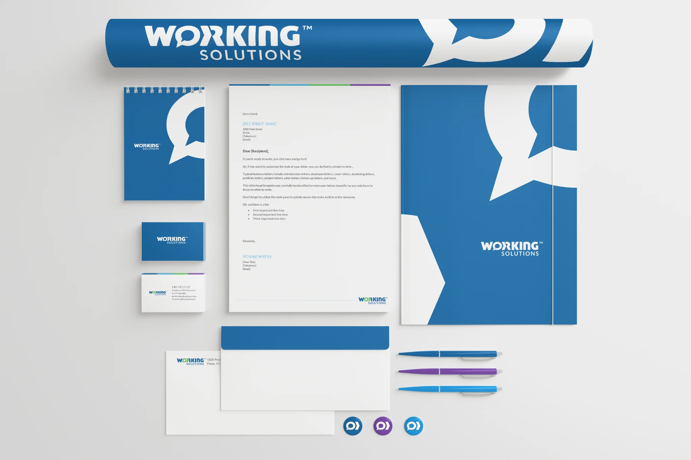
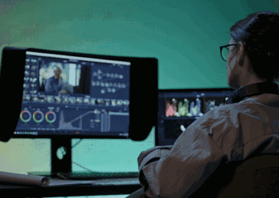

ADI / Resideo · Design system
One component. Every screen.
Six Figma component families with desktop, tablet and phone variants, refined with heatmaps. +25% clicks on featured products.

Hector Osuna
Senior digital and visual designer creating responsive web experiences, intuitive interfaces and distinctive brand systems.
FEATURED CASE STUDY REBRAND® 100 MERIT
Working Solutions — an award-recognized identity and digital experience, from visual system to website.

Enterprise UI, responsive web experiences and campaigns grounded in business needs.
ADI / Resideo · Design system
Six Figma component families with desktop, tablet and phone variants, refined with heatmaps. +25% clicks on featured products.
CareerStaff · Web & information architecture
Persona research and a new structure for three audiences, on pages that load 80% faster.

Caliber · Brand & campaign design
Brand systems, campaign creative and digital experiences across Caliber’s business lines.

Motion design · Video production
Video editing, motion graphics and visual storytelling for ADI, Working Solutions and independent projects.

Certification projects and self-initiated concepts exploring mobile and living-room experiences.
FitNudge · UX certification project
Survey research, information architecture and Figma prototypes for an all-in-one fitness app.

FitNudge · Self-initiated tvOS extension
A focus-driven fitness experience for the living room, with a working prototype, a motion spec and an accessibility plan.
New · tvOS concept
A redesign with a sticky filter bar, an International hub, always-on Continue Watching and a Siri Remote you can actually use.

Music streaming · UX research
A 17-person survey, a competitive scan and personas that pointed an MVP toward offline reliability.

From enterprise web experiences to brand systems and exploratory interfaces, I combine visual craft, usability and practical implementation to make complex information easier to navigate and products easier to use.
From a one-inch logo test to a 10-foot interface, legibility and polish are the first requirement, not the last.
10-foot principlesComponents with variants, documented specs and tokens, so quality holds as more people build with them.
The component systemMotion and interaction are designed in a working prototype, then specified so engineering can match it.
Focus state labResults reported from shipped work.
Based in Dallas–Fort Worth and open to relocation.